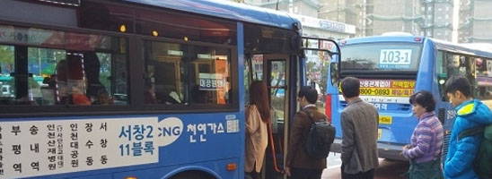
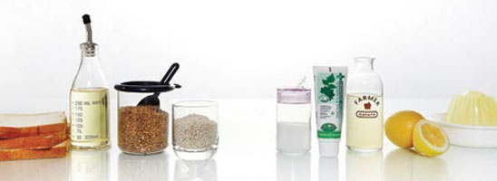
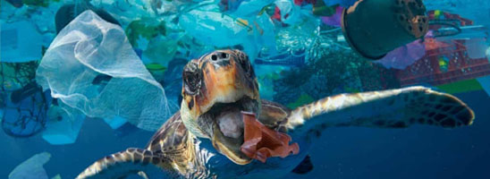
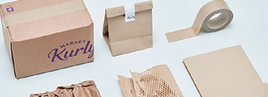

레서판다와 함께 살아가요.
Q. 레서판다는 생태계의 일부로서 생물 다양성을 꼭 필요한 존재에요.
하지만 꼭 레서판다만이 중요한 역할을 하고 있을까요?
아니에요.
수많은 멸종 위기 동물들이 생물 다양성을 유지하는데 중요한 역할을 한답니다.
레서판다와 다른 동물친구들을 보호하기 위해서
어떤 행동을 할 수 있을까요?
대중교통 이용

자가용, 택시대신 대중교통을 이용하여 환경 오염을 줄이고
교통수단별 이산화탄소 배출 계수를 고려해 환경 친화적인 선택을 해요.
천연세제 사용

설거지하거나 빨래할 때, 무심코 사용했던 세제들이
환경오염에 큰 영향을 미치고 있는 것
알고 계셨나요?
천연 세제를 사용하여 환경오염을 줄일 수 있어요.
플라스틱 사용 줄이기

우리가 무심코 사먹는 커피 한 잔 그리고 그 커피를 담기 위해 발생하는 플라스틱 컵
나 혼자일때는 큰 쓰레기가 아니지만 10명만 모여도 플라스틱 컵은 10개가 돼요.
나 하나 쯤이야가 아닌 나부터 실천하자로 플라스틱 컵대신 텀블러를 사용해 보새요.
재활용 포장재 재사용

우리가 한 번 사용했던 종이박스, 아이스팩등 재사용 할 수 있는 재활용품이 많아요 !
재활용 수거 업체에 반납하거나 재사용해보는 것도 아주 큰 도움이 된답니다.